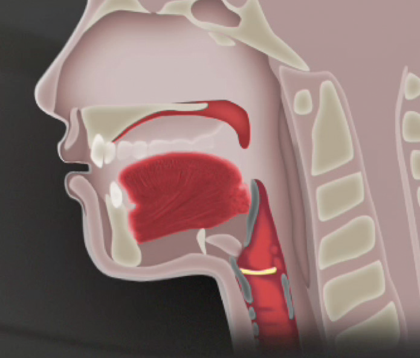

Im vorliegenden didaktischen Medium werden Kenntnisse über die Stimmphysiologie innovativ vermittelt. Bei der Konzeption haben sich die Autoren, vor dem Hintergrund einer Doppelqualifikation als professionelle Musiker und Sänger sowie als Musikermediziner, intensiv mit Fragen der Gesangspädagogik sowie des multimedialen Lernens auseinandergesetzt und mit Sängern, Sprechern, Gesangspädagogen, Chorleitern und Chorsängern, Professoren und Studierenden zusammengearbeitet.
Das visuelle Lernen, wie es anhand der vorliegenden Filme möglich ist, eröffnet für die unterschiedlichen Kontexte, in denen die Stimme eingesetzt wird, neue didaktische Zugänge. Das Wissen um die Zusammenhänge innerhalb des Körpers und um die physiologischen Vorgänge führt zu einem vertieften Verstehen der eigenen stimmlichen Praxis.
Als ich die MRT-Aufnahmen gesehen habe, war ich zuallererst total verblüfft. Ich hatte ja null Komma null Ahnung. Diese ewig lange Zunge zum Beispiel! Ich wusste über physische Rahmenbedingungen Bescheid, das braucht man für eine gesunde Technik. Nun werde ich meine Technik sicher nicht umstellen nach diesem Video. Aber viele Feinheiten und Details über den gesamten Kopf- und Halsbereich waren mir absolut neu.
„Dadurch, dass jetzt die Magnetresonanz-Aufnahmen des Vokaltrakts zusammen mit den endoskopischen Kehlkopfaufnahmen kombiniert vorliegen, können Sänger und Gesangswissenschaftler in Echtzeit die komplexen Interaktionen zwischen den Bewegungenim Kehlkopf und im Vokaltrakt nachvollziehen. Dies ermöglicht wichtige zusätzliche Erkenntnisse bei der Stimmanalyse.“
Dieses Medienangebot ergänzt die bisher unter Mitwirkung der Autoren bereits zum Thema Stimme, Lampenfieber und Gesangsphysiologie erschienenen Bücher, Lexika und Fachpublikationen dergestalt, dass nun die bislang mit Worten beschriebenen und mit Bildern und Tabellen illustrierten Sachverhalte durch Filme und grafisch animierte Erläuterungen für jeden Betrachter in ihrem bewegten Ablauf anschaulich nachvollziehbar sind.
Gleichzeitig ist es jedoch wichtig, Verallgemeinerungen zu relativieren. Es geht in den Filmen darum, anhand von einzelnen, individuellen Beispielen die physiologischen Abläufe sichtbar zu machen. Hierfür haben Künstler an der Produktion mitgearbeitet, die im jeweiligen Stil erfahren und erfolgreich sind. Es lassen sich hieraus jedoch keine prinzipiell „richtigen“ oder „falschen“ Sprech- oder Gesangstechniken ableiten. Hinzu kommt, dass die Medizin als Fachgebiet sich in ständiger Weiterentwicklung befindet. Gerade in der Stimmphysiologie werden wissenschaftliche Diskurse geführt, die sich wegen ihrer Komplexität auf diesem Medium nicht abbilden ließen. Um die Sachverhalte für möglichst viele Stimminteressierte verständlich zu halten, wurde deshalb versucht, komplizierte Zusammenhänge vereinfacht wiederzugeben.
Wenngleich also in den Filmen grundsätzliche übergreifende Prinzipien zu erkennen sind, sollte aus bestimmten detaillierten Abläufen keine dezidierte Lehrmeinung oder festgefügte Überzeugung abgeleitet werden.
Interessierte, welche die wissenschaftlichen Auswertungen der Filme nachlesen wollen, seien auf die Fachpublikationen der FIM-Arbeitsgruppe verwiesen, die auf der Website www.fim.mh-freiburg.de aufgelistet sind.
|
|
DVD-ROM und Film-App sind als pädagogisches Medium konzipiert. Zum besseren Verständnis sind die Filme von gesprochenen Kommentaren begleitet. Diese können jedoch auch individuell an- und abgeschaltet werden damit die Filme auch „kommentarlos“ verwendet werden können (in der App entsprechend anwählen).
Die Filme können ohne medizinisches Vorwissen interaktiv im Sprech- und Gesangsunterricht, im fachspezifischen Methodikunterricht, in der Stimmbildung in Chören und an allgemeinbildenden Schulen im Musikunterricht eingesetzt werden. Gleichermaßen sind sie auch für das Selbststudium geeignet. Auch für Vertreter des Faches Musikphysiologie und Musikermedizin bietet dieses Medium neue, nie gesehene Einblicke und die Filme können im Unterricht „Stimmphysiologie“ an Musikhochschulen eingesetzt werden.
Zum besseren Verständnis sind die Filme von gesprochenen Kommentaren begleitet (��). Wenn die Zusammenhänge im Unterricht selbst kommentiert werden sollen, können die Filme aber auch kommentarlos verwendet werden, für diesen Zweck sind sie in der App immer zweimal vorhanden.
|

|
Um von den Filmen maximal zu profitieren, empfehlen wir jedem Betrachter, sich als Erstes im Kapitel Instrument Stimme zu informieren. Dieses Kapitel macht Aufbau und Funktionsweise der an der Stimmproduktion beteiligten Organe und Funktionssysteme verständlich und schafft die besten Voraussetzungen, den größtmöglichen Vorteil aus der Betrachtung der Filme zu den stimmlichen Ausdrucksformen zu ziehen.
Das Gleiche gilt für das Kapitel Untersuchungsmethoden. Hier erfahren Sie, wie die Filme hergestellt wurden und können so die Qualität der Filme noch besser nachvollziehen oder gewinnen Verständnis für gewisse technische Einschränkungen wie z.B. die Tonqualität.
Im Kapitel Stimmliche Ausdrucksformen empfiehlt es sich, auch die Filme zu den Stimmstilen anzusehen, die man selbst (bislang…) nicht so gut kennt. Aus den Gemeinsamkeiten und Unterschieden lassen sich zusätzliche Erkenntnisse gewinnen.